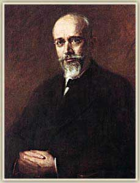

Ο σπουδαιότερος πολιτικός ηγέτης στην ιστορία της νεότερης Ελλάδας. Το όνομά του συνδέθηκε με τα σημαντικότερα γεγονότα του πρώτου μισού του 20ου αιώνα. Γεννήθηκε στις Μουρνιές Χανίων. Στα χρόνια της πρωθυπουργίας του ενδιαφέρθηκε τόσο για τον εκσυγχρονισμό του κράτους, όσο και για τη βελτίωση της ετοιμότητας του στρατού. Φρόντισε, με τη λήξη των βαλκανικών πολέμων, η Ελλάδα να αποκομίσει όσο το δυνατόν περισσότερα οφέλη (απελευθέρωση της Μακεδονίας και Ηπείρου).
Με την έκρηξη του Α' παγκοσμίου πολέμου διαφώνησε με το βασιλιά Κωνσταντίνο στο θέμα της συμμετοχής της χώρας στον πόλεμο και έκανε δική του κυβέρνηση στη Θεσσαλονίκη (εθνικός διχασμός).
Με την παραίτηση του βασιλιά η Ελλάδα τάχθηκε στο πλευρό των συμμάχων. Οι προσδοκίες του Βενιζέλου σε περίπτωση συμμετοχής της χώρας στον πόλεμο επαληθεύτηκαν, γιατί με τις συνθήκες του Νεϊγύ (1919) και Σεβρών (1920) δημιουργήθηκε η Μεγάλη Ελλάδα "των δύο ηπείρων και πέντε θαλασσών". Η αποτυχία επανεκλογής του στην πρωθυπουργία (1920) θεωρείται ότι επηρέασε τις μετέπειτα εξελίξεις στο μικρασιατικό μέτωπο. Στην τελευταία πρωθυπουργική του θητεία (1928 - 1932) υπέγραψε σύμφωνο φίλίας με την Τουρκία.
Εκτενείς πληροφορίες για τον σημαντικότερο Έλληνα πολιτικό του 20ου αιώνα
|  |